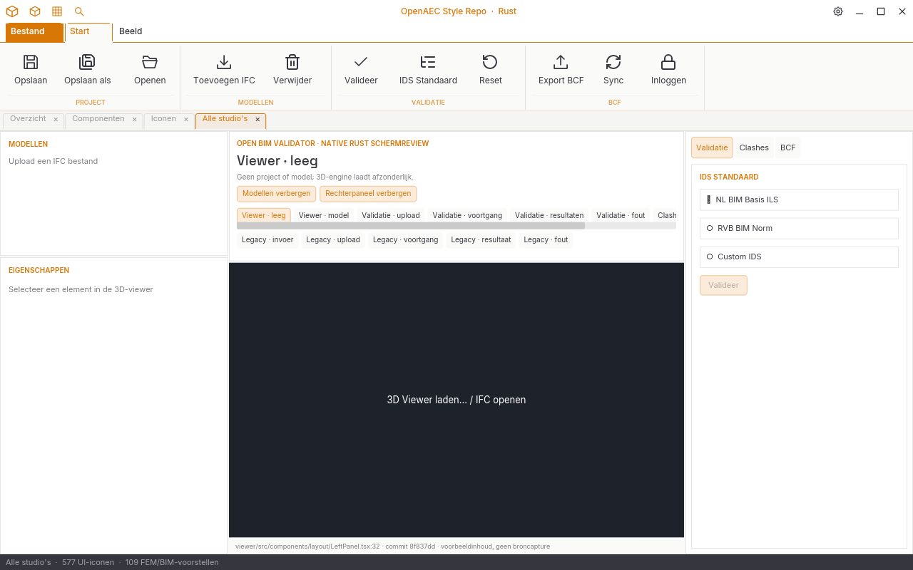
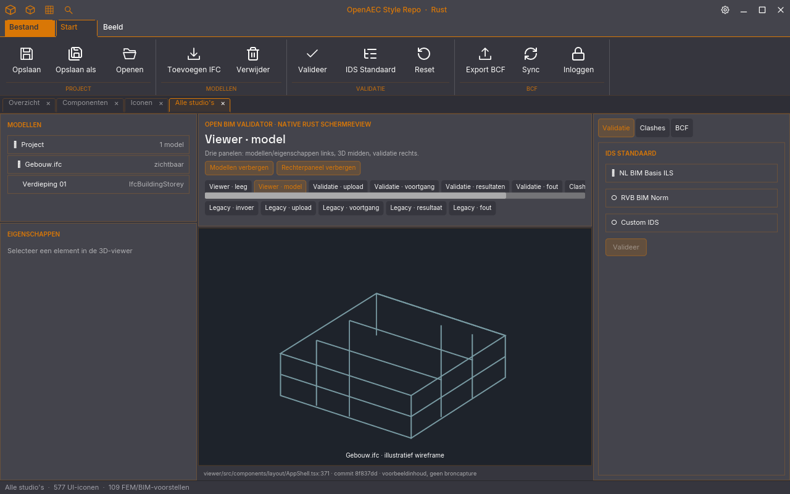
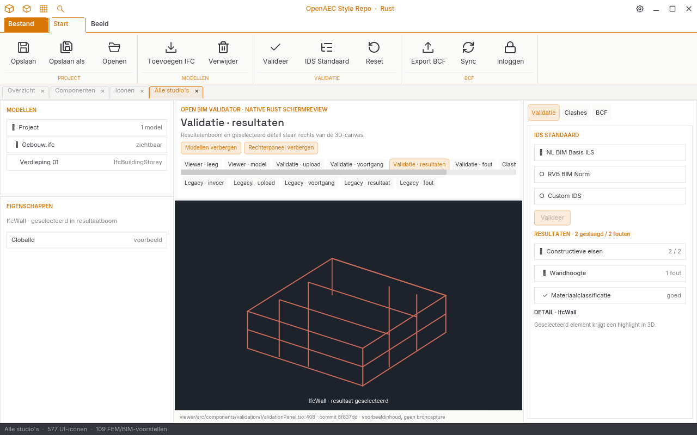
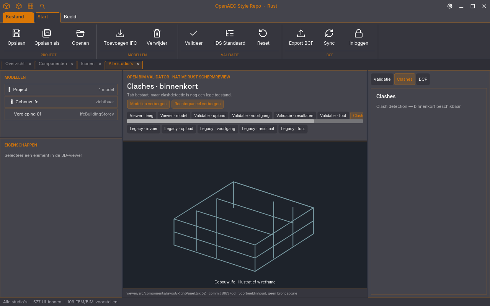
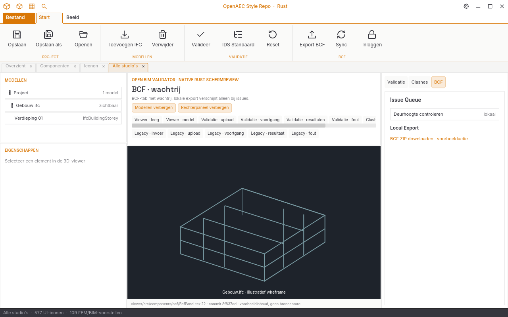
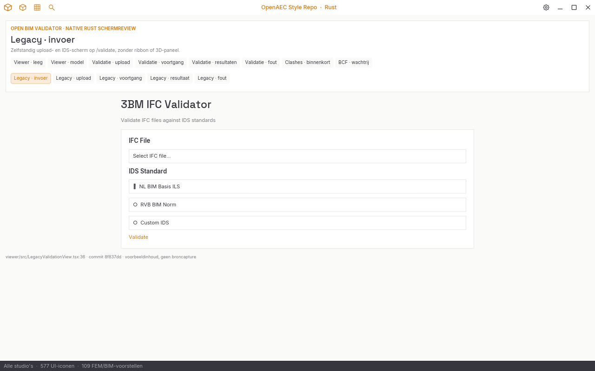
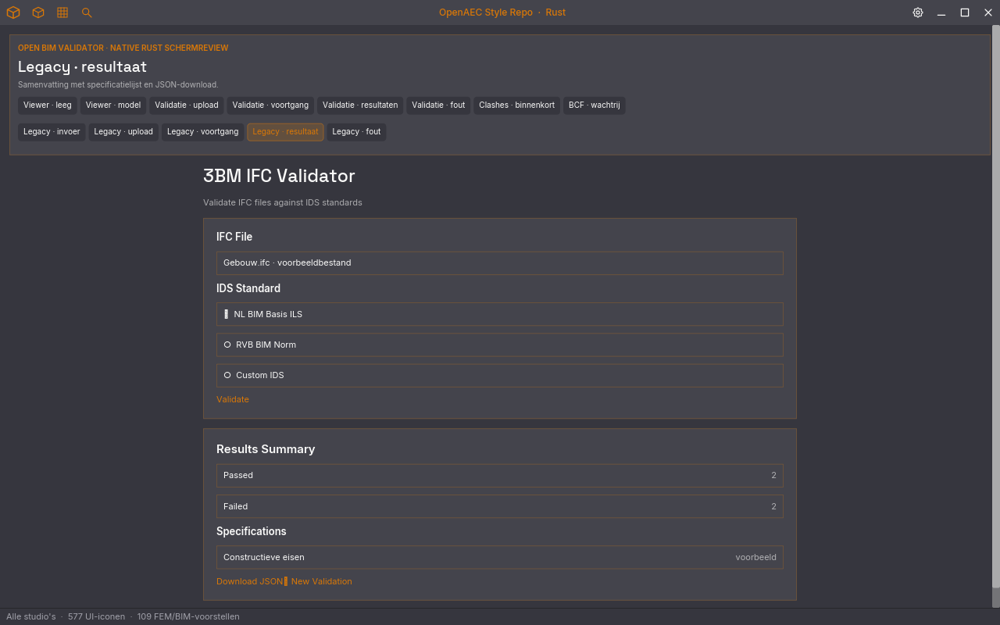

Bronbewijs
Structurele ontwerpstudie. Geen runtime-capture voor pixelverschil; 3D-model, resultaten en serverdialooginhoud zijn illustratief. De /validate-werkstroom is een afzonderlijke interface.
Native Rust-schermproef
Software-renders op 1280 × 800 px van de gedeelde crate. De 3D-tekening en resultaten zijn expliciet voorbeeldinhoud; de panelen hebben in deze proef vaste 1:2:1-verhoudingen.













